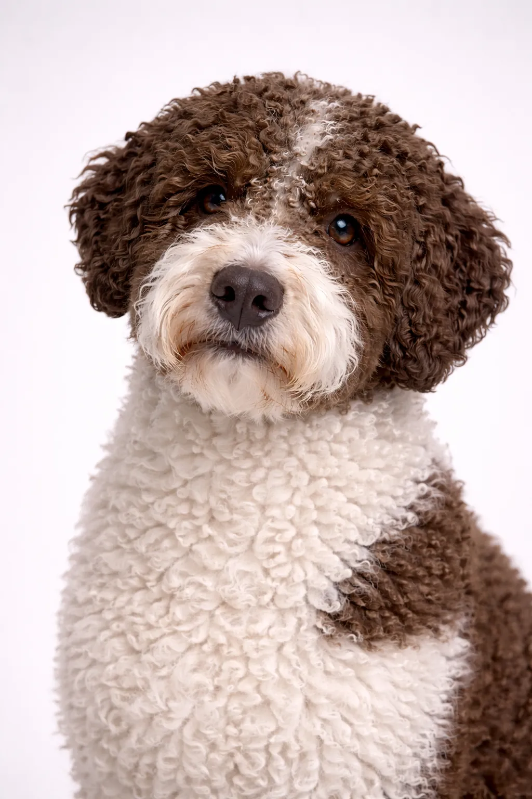

Lagotto Romagnolo
Athlétique et vif, loving, parfait pour les coureurs, retonneurs et familles actifs.
16-19 in
24-35 lbs
Évaluations de la Race
Tempérament
Aperçu
Le Lagotto Romagnolo est un Chien de Chasse vif, aimant, Undemanding originaire de Italie. Cette race de taille moyen est connue pour sa personnalité unique et fait un merveilleux compagnon pour la bonne famille.
Tempérament
Le Lagotto Romagnolo est vif et aimant. Cette race est connue pour son caractère équilibré et forme des liens forts avec sa famille. Avec une socialisation et un dressage appropriés, ils deviennent des compagnons loyaux et affectueux.
Santé
Le Lagotto Romagnolo a une espérance de vie de 15-17 ans. Comme beaucoup de races de cette taille, ils peuvent être sujets à dysplasie de la hanche, allergies et problèmes oculaires. Des visites vétérinaires régulières et une alimentation équilibrée sont importantes pour une vie longue et saine.
Exercice
Le Lagotto Romagnolo est une race très énergique qui nécessite au moins 60-90 minutes d'exercice quotidien. Les longues promenades, la course et les jeux actifs sont idéaux. Sans suffisamment d'exercice physique et mental, des problèmes de comportement peuvent survenir.
⦿ Cette Race Est-Elle Faite Pour Vous ?
✓ Idéal Pour
- Familles
- Personnes allergiques
- Propriétaires actifs
✗ Pas Idéal Pour
- Ceux qui évitent le toilettage
- Propriétaires très sédentaires
Notre Verdict : Le Lagotto Romagnolo est un compagnon vif et aimant pour la bonne famille. Avec des soins et un dressage appropriés, cette race devient un ami fidèle pour la vie.